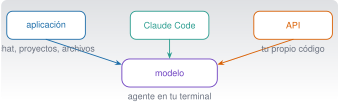

Claude y el ecosistema Anthropic
C1 · Vía C
Versión 0.2.0 · editada el 23/10/2026 · comprobada el 23/10/2026 · Claude Code 2.1.309 (doc.) · pendiente de revisión

Objetivos y prerrequisitos
Objetivos. Al terminar la unidad sabrás:
- distinguir la aplicación Claude, Claude Code y la API, y elegir la que conviene a cada tarea;
- elegir un modelo y un plan con criterios (capacidad, velocidad, coste, límites) sin memorizar nombres que cambian cada pocos meses;
- decidir qué datos puedes compartir según el tipo de cuenta;
- escribir instrucciones claras, aportar contexto y refinar una respuesta de forma iterativa;
- trabajar con documentos y tablas, y comprobar lo que Claude te devuelve con una herramienta independiente.
Prerrequisitos. C0 · Fluidez en IA, fundamentos e historia. No hace falta saber programar.
Tiempo orientativo. 4–5 horas. Nivel: básico. Herramientas: una cuenta de Claude (la gratuita basta para casi todo); Julia, solo para las comprobaciones opcionales.
Esta unidad mezcla conceptos estables (qué es una ventana de contexto, por qué se verifica) con datos que cambian (nombres de modelos, planes, límites, precios). Los segundos llevan fecha de consulta (23-10-2026) y un enlace a la fuente oficial: antes de decidir nada que dependa de ellos, vuelve a mirarlos.
Temas de la unidad
- C1.1 Anthropic y la evolución de Claude: familias y versiones de modelos, con fecha
- C1.2 Interfaces: Claude en web, escritorio y móvil, Claude Code y API
- C1.3 Conversar con una IA frente a trabajar con un agente de programación
- C1.4 Elegir modelo; planes, autenticación y facturación
- C1.5 Protección de datos: uso personal frente a uso empresarial
- C1.6 Introducción al prompting: contexto, ejemplos, formato e iteración
- C1.7 Proyectos, artefactos y análisis de ficheros
- C1.8 Tareas tipo: informes, procedimientos, tablas, documentación técnica y planes de trabajo
- C1.9 Anthropic Academy y otras fuentes oficiales para seguir aprendiendo
Teoría breve
C1.1 Anthropic y la evolución de Claude: familias y versiones de modelos, con fecha
Claude es una familia de modelos de lenguaje desarrollada por la empresa Anthropic. Lo que de cada modelo interesa a quien lo usa es poco: qué sabe hacer, cuánto texto admite, cuánto tarda y cuánto cuesta. Anthropic publica una nueva generación de modelos con frecuencia, de modo que cualquier lista concreta envejece pronto.
A fecha de consulta, la documentación oficial (Models overview 2026) describe cuatro líneas de modelos con propósitos distintos. La tabla resume lo que la fuente dice; los precios son por millón de tokens (MTok) en la API.
| Línea | Para qué la presenta la documentación | Velocidad relativa | Entrada / salida por MTok |
|---|---|---|---|
| Fable 5.1 | Razonamiento exigente y trabajo agéntico de largo recorrido | La más lenta | 10 $ / 50 $ |
| Opus 5.5 | Programación agéntica larga y trabajo del conocimiento | Moderada | 4 $ / 20 $ |
| Sonnet 5.5 | La mejor combinación de velocidad e inteligencia | Rápida | 2 $ / 10 $ |
| Haiku 5.5 | Tareas masivas y de baja latencia: clasificar, extraer, enrutar | La más rápida | desde 0,10 $ / 0,50 $ |
Los cuatro admiten texto e imágenes de entrada, tienen una ventana de contexto de 1 millón de tokens y un máximo de salida de 128 000 tokens, según esa misma página. Cada modelo tiene un identificador (claude-sonnet-5-5, por ejemplo) que es el que se escribe en el código, y Anthropic fija una fecha mínima de retirada de cada uno: los modelos no son eternos.
- Dar por buena una tabla antigua. Nombres, precios y límites cambian; la página oficial manda.
- Confundir «más reciente» con «mejor para mi tarea». Un modelo más pequeño puede bastar y ser más rápido y barato.
- Preguntarle al propio modelo qué modelo es o cuándo se publicó. Puede equivocarse; mira la documentación.
Pon a prueba lo anterior.
Una tabla de modelos y precios copiada de un curso del año pasado sigue siendo una referencia fiable para decidir.
Falso. Modelos, precios y límites cambian; hay que contrastarlos con la documentación oficial en el momento de decidir.
Necesitas clasificar miles de correos por categoría, con respuestas muy rápidas y coste bajo. Según la descripción oficial, ¿qué línea encaja mejor en principio?
- Fable.
- Opus.
- Sonnet.
- Haiku.
Haiku: la documentación la presenta para tareas de gran volumen y baja latencia como clasificar o extraer. Antes de elegir, pruébala con tus propios ejemplos.
C1.2 Interfaces: Claude en web, escritorio y móvil, Claude Code y API
El mismo modelo se ofrece por tres vías, pensadas para usos distintos:
| Vía | Qué es | Quién la usa | Qué hace por ti | Cómo se paga |
|---|---|---|---|---|
| Aplicación Claude (web, escritorio, móvil) | Un chat con proyectos, archivos y artefactos | Cualquier persona | Conversa, analiza documentos, crea textos y tablas | Gratuita o plan de suscripción |
| Claude Code | Un agente que trabaja en tu terminal, en tu editor o en la web sobre tus ficheros | Quien programa o analiza datos en un proyecto | Lee el proyecto, edita ficheros, ejecuta comandos y pruebas (con tu permiso) | Con la cuenta de un plan compatible o con facturación de la API |
| API | Un servicio al que se llama desde tu propio programa | Quien construye aplicaciones | Solo lo que programes: tú gestionas conversación, herramientas y errores | Por tokens consumidos |
La regla práctica: la aplicación para conversar y trabajar con documentos; Claude Code para trabajar dentro de un proyecto con ficheros y comandos; la API para integrar el modelo en tu propio software. Las tres se tratan en el curso: la aplicación aquí (C1), Claude Code desde C4 y la API en C9.
Las funciones disponibles (herramientas, conectores, memoria, modelos accesibles) dependen del producto y del plan; consulta siempre la página de cada producto antes de contar con una de ellas.
Pon a prueba lo anterior.
Quieres que un asistente lea los ficheros de tu proyecto, ejecute las pruebas y proponga cambios en el código, pidiéndote permiso. ¿Qué vía encaja?
- La aplicación de chat, pegando el código.
- Claude Code.
- Solo la API, sin escribir nada de código.
- Ninguna: un modelo no puede ejecutar pruebas.
Claude Code: está diseñado para trabajar sobre tus ficheros y comandos con tu permiso. En el chat tendrías que copiar y pegar a mano, y la API exige que programes tú el bucle de trabajo.
C1.3 Conversar con una IA frente a trabajar con un agente de programación
En una conversación, tú aportas el contexto (pegas texto, adjuntas archivos) y el modelo responde; la persona hace de intermediaria con el mundo. En un agente de programación, el modelo puede usar herramientas por su cuenta: leer ficheros, buscar, editar, ejecutar comandos, y repetir hasta terminar (How Claude Code works 2026). Eso lo hace más potente y también más delicado: un error ya no es solo un texto equivocado, puede ser un fichero modificado o un comando ejecutado.
| Conversación | Agente | |
|---|---|---|
| Contexto | Lo que pegas o adjuntas | Lo que explora en tu proyecto |
| Acciones | Ninguna fuera del chat (salvo funciones concretas) | Edita ficheros, ejecuta comandos |
| Riesgo de un error | Sobre todo una respuesta equivocada | Un cambio o una ejecución no deseados |
| Control | Lees y decides | Permisos, revisión de cambios, control de versiones (C3) |
Cuanto más autonomía, más supervisión: es el principio de C0.9 y la razón por la que Claude Code pregunta antes de actuar y por la que se trabaja con Git.
Pon a prueba lo anterior.
Describe una tarea que harías en conversación y otra que preferirías delegar a un agente, y qué control añadirías en la segunda.
- La tarea de conversación no requiere que el modelo toque mis ficheros.
- La tarea del agente implica leer o modificar ficheros o ejecutar algo.
- Nombro un control concreto (revisar el diff, trabajar en una rama, permisos limitados).
C1.4 Elegir modelo; planes, autenticación y facturación
Elegir modelo. No hay un modelo «mejor» en abstracto. Un criterio razonable, sin pretender que sea una regla universal: empieza por uno de tamaño medio, comprueba si cumple tus criterios de aceptación con ejemplos tuyos, sube de línea si falla por razonamiento o largo recorrido y baja a la más ligera si sobra capacidad y necesitas velocidad o abaratar. Mide con tus propios casos, no con la reputación.
Planes. La aplicación se ofrece con un plan gratuito y otros de suscripción individuales y de equipo y empresa; la página de precios (Claude pricing 2026) indica, a fecha de consulta, qué incluye cada uno: modelos accesibles, límites de uso por ventana de tiempo, y si se puede usar Claude Code (el plan gratuito no lo incluye en esa página). Los límites y los precios cambian y los consulta cada persona en su cuenta. La API se factura aparte, por tokens, y una suscripción de la aplicación no es un crédito de API.
Autenticación. En la aplicación inicias sesión con tu cuenta. En Claude Code puedes iniciar sesión con la cuenta de un plan compatible o usar una clave de API (C4). En la API la autenticación es siempre una clave secreta: se trata como una contraseña (nunca en el código ni en el repositorio, C9).
Un cálculo de coste. En la API, el coste de una petición es \[ \text{coste} = \frac{n_{\text{entrada}}\,p_{\text{entrada}} + n_{\text{salida}}\,p_{\text{salida}}}{10^{6}}, \] con los precios por millón de tokens. Con los de Sonnet 5.5 de la tabla anterior, una petición de 20 000 tokens de entrada y 2 000 de salida cuesta \((20\,000\cdot 2 + 2\,000\cdot 10)/10^6 = 0{,}06\) dólares.
Pon a prueba lo anterior.
Con los precios de la tabla (Sonnet 5.5: 2 $ por MTok de entrada y 10 $ por MTok de salida), ¿cuántos dólares cuesta una petición de 20 000 tokens de entrada y 2 000 de salida?
\((20\,000\cdot 2 + 2\,000\cdot 10)/10^6 = 0{,}04 + 0{,}02 = 0{,}06\) $.
Pagar una suscripción individual de la aplicación te da saldo para usar la API en tus programas.
Falso. La API se factura aparte, por tokens consumidos. La suscripción cubre el uso de la aplicación (y, en los planes compatibles, de Claude Code).
C1.5 Protección de datos: uso personal frente a uso empresarial
C0.7 clasificó los datos. Aquí se aplica a la cuenta que usas. Lo relevante es bajo qué condiciones se procesa lo que escribes:
- En las cuentas gratuitas, Pro y Max, Anthropic anunció el 28-08-2025 que los chats y las sesiones de código pueden usarse para entrenar modelos nuevos si la persona lo permite; la decisión se cambia en los ajustes de privacidad, y la retención es mayor si se acepta (cinco años frente a 30 días) (Updates to Consumer Terms and Privacy Policy 2025).
- Los servicios bajo condiciones comerciales (Team, Enterprise, API, Education, Gov) quedan fuera de ese cambio, según el mismo anuncio. Eso no significa que cualquier dato pueda subirse: sigue haciendo falta permiso de quien cedió los datos y base legal para los personales.
Son condiciones de una fecha concreta y pueden haber cambiado. Lee las condiciones vigentes de tu cuenta antes de subir nada que no sea público, y deja en manos de tu institución o empresa la decisión sobre qué cuenta usar para trabajo con datos de terceros. Quita siempre claves, credenciales y datos personales innecesarios antes de pegar.
Pon a prueba lo anterior.
Tienes registros de una planta cedidos bajo acuerdo de confidencialidad. ¿Qué haces antes de usarlos con Claude?
- Los subo a mi cuenta gratuita, porque nadie los va a ver.
- Los subo si cambio el nombre de la planta por «Planta A».
- Pido permiso a quien los cedió y uso solo el servicio y la cuenta que ese permiso y las condiciones permitan.
- Los copio en trozos pequeños para que no se note.
El permiso lo da quien cedió los datos y depende de las condiciones del servicio (C0.7). Cambiar un nombre no basta, y trocear no cambia lo que estás compartiendo.
C1.6 Introducción al prompting: contexto, ejemplos, formato e iteración
Un prompt es la instrucción que das al modelo. La guía oficial (Prompting best practices 2026) reúne técnicas útiles, y conviene recordar que son orientaciones empíricas, no leyes: lo que mejora un resultado con un modelo o una tarea puede no hacerlo con otros. Por eso se prueba y se mide.
- Sé claro y directo. Di qué quieres, para quién y con qué criterio de éxito. Un buen test: si se lo dieras a un compañero competente que no conoce tu proyecto, ¿entendería la tarea?
- Aporta contexto y motivo. Explicar para qué sirve el resultado ayuda a decidir los detalles que no dijiste.
- Da ejemplos del formato o del tono que quieres. Pocos ejemplos bien elegidos orientan mejor que una descripción larga.
- Estructura lo que mezcla instrucciones, datos y ejemplos (por ejemplo, con etiquetas XML o encabezados) para que no se confundan.
- Con documentos largos, pon los datos primero y la pregunta al final, según la guía.
- Pide el formato de salida (tabla, lista, JSON, longitud).
- Itera. La primera respuesta es un borrador: corrige, pide alternativas, señala qué falla.
De peor a mejor, con un ejemplo (ilustrativo; las respuestas reales varían):
| Intento | Prompt | Problema |
|---|---|---|
| 1 | «Resume esto.» | No dice para quién, cuánto ni con qué fin. |
| 2 | «Resume este informe de inspección en cinco líneas para un gerente.» | Mejor, pero no dice qué decisión debe tomar. |
| 3 | «Eres técnico de mantenimiento. Resume en cinco líneas, para un gerente que debe decidir si para la línea 2 el lunes, el estado de las bombas. Separa hechos medidos de interpretaciones y señala lo que no se puede concluir con los datos del informe.» | Rol, destinatario, decisión, formato y honestidad sobre los límites. |
Lo que no hace un buen prompt: garantizar la verdad. Sigue valiendo todo C0.5: un texto perfectamente instruido puede contener errores, así que se verifica.
Un prompt claro reduce los malentendidos; la verificación detecta los errores. Hacen falta las dos cosas.
Pon a prueba lo anterior.
¿Qué mejoran el prompt «Resume este informe»? (elige todas las correctas)
- Añadir «por favor» varias veces.
- Indicar para quién es el resumen y qué decisión debe apoyar.
- Pedir un formato concreto y una longitud.
- Escribirlo en mayúsculas.
Destinatario, decisión, formato y longitud. La cortesía o las mayúsculas no aportan información que el modelo pueda usar.
Reescribe el prompt «Hazme una tabla con los datos» para una hoja de ventas de tres regiones durante 36 meses.
- Indico qué columnas y qué agregación quiero (por ejemplo, total anual por región).
- Digo el formato de salida y cómo tratar los valores ausentes.
- Pido que señale cualquier dato que no haya podido interpretar.
C1.7 Proyectos, artefactos y análisis de ficheros
Archivos. La aplicación acepta documentos (PDF, Word, CSV, texto, hojas de cálculo…) e imágenes, con límites de tamaño y de número por conversación que la página de ayuda detalla y que cambian (What kinds of documents can I upload to Claude? 2026). Dos precauciones: en los documentos que no son PDF se extrae solo el texto (las imágenes incrustadas no se interpretan), y los PDF muy largos pueden procesarse solo como texto. No des por hecho que «lo vio todo»: pídele que indique qué partes ha leído.
Proyectos. Un proyecto es un espacio de trabajo con sus conversaciones, unos documentos de conocimiento y unas instrucciones propias (rol, tono, convenciones), útil para tareas que se repiten (What are projects? 2026). Lo que subes como conocimiento forma parte del contexto, así que aplica C1.5 a esos documentos.
Artefactos. Son resultados autocontenidos (un documento, una presentación, una página, un programa pequeño) que se abren junto al chat, se editan y se comparten, en los planes que los incluyen (What are artifacts and how do I use them? 2026). Un artefacto generado es código o contenido de Claude: revísalo antes de usarlo, sobre todo si ejecuta algo o contiene cifras.
Análisis de datos. Cuando Claude analiza un fichero puede hacerlo escribiendo y ejecutando código (según la configuración de tu cuenta) o simplemente «leyendo» el contenido. Son cosas distintas: lo primero es reproducible y lo segundo no. Pide siempre el código o el procedimiento y recalcula tú algún valor con otra herramienta (Excel, Julia, Python).
Pon a prueba lo anterior.
Si subo un Word con gráficos y tablas de imagen, Claude interpretará también las imágenes incrustadas.
Falso (según la página de ayuda consultada): en los documentos que no son PDF se extrae solo el texto. Si el contenido está en una imagen, adjúntala aparte o descríbela.
C1.8 Tareas tipo: informes, procedimientos, tablas, documentación técnica y planes de trabajo
Cinco patrones de uso que se repiten en ingeniería y en la empresa, con su riesgo principal:
| Tarea | Cómo plantearla | Riesgo | Cómo comprobarlo |
|---|---|---|---|
| Informe a partir de datos | Aporta los datos y pide separar hechos de interpretación | Conclusiones que los datos no apoyan | Recalcula cifras clave; marca cada afirmación con su dato |
| Procedimiento (por ejemplo, un protocolo de inspección) | Pide pasos numerados, criterios de aceptación y precauciones | Omitir un paso de seguridad | Revisión por una persona competente; contraste con la norma aplicable |
| Tabla | Define columnas, unidades y tratamiento de ausentes | Mezclar unidades, filas inventadas | Cuenta filas, suma totales, compara con el original |
| Documentación técnica | Da el código o la especificación y el lector objetivo | Describir lo que el código debería hacer en vez de lo que hace | Ejecuta los ejemplos que aparezcan |
| Plan de trabajo | Indica plazos, recursos y dependencias reales | Estimaciones optimistas sin base | Contrasta con tu experiencia previa |
En todas: un humano firma (C0.9) y los datos de terceros siguen las reglas de C1.5.
C1.9 Anthropic Academy y otras fuentes oficiales para seguir aprendiendo
Anthropic ofrece una academia con cursos gratuitos (Claude Academy 2026). A fecha de consulta lista, entre otros, «AI Fluency: Framework and foundations» (el marco de las cuatro D que viste en C0.6), «AI capabilities and limitations» y «Building effective human-agent teams» (en beta). Este curso no copia esos materiales: los resume con palabras propias y te enlaza a ellos. Para la documentación técnica, las fuentes de referencia son la de la API y los modelos, la de Claude Code y el centro de ayuda de la aplicación (support.claude.com). Recuerda: la fuente oficial es la vigente; los cursos, también este, se desactualizan.
Práctica guiada
Requiere cuenta · Local gratuita (la comprobación) · Los ejemplos con Claude son ilustrativos: sus respuestas varían.
Ficha. Objetivo: analizar una hoja de ventas con Claude y comprobar los resultados por otra vía. Archivos: datos/sinteticos/curso-claude/a_ventas.csv (datos sintéticos, 109 filas; ficha a_ventas.meta.toml). Versiones: aplicación de Claude (cualquier plan) y, opcional, Julia 1.12. Instalación: ninguna para la parte de Claude. Resultado esperado: tus cifras y las de Claude coinciden, o has localizado la diferencia. Problemas frecuentes: subir el fichero y no indicar qué hacer con los valores ausentes.
Abre una conversación nueva y adjunta
a_ventas.csv. Es sintético: puedes subirlo sin restricción (C0.7).Envía este prompt:
Este CSV tiene ventas mensuales por región (Norte, Centro, Sur) de 2023 a 2025. Antes de analizar, dime cuántas filas tiene, si hay valores ausentes o filas repetidas y cuáles. Luego calcula el total de
ventas_eurpor región y en conjunto, ignorando las filas repetidas y los valores ausentes. Muestra el código o el procedimiento que usaste.Anota sus cifras y comprueba cada una con una herramienta independiente. Con Julia (solo biblioteca estándar), desde la carpeta del repositorio:
using Printf
filas = split.(readlines("datos/sinteticos/curso-claude/a_ventas.csv")[2:end], ",")
únicas = unique(filas)
ventas = [parse(Float64, f[3]) for f in únicas if f[3] != ""]
println(length(filas), " filas, ", length(únicas), " únicas")
@printf("%d ausentes; total = %.2f\n", count(f -> f[3] == "", únicas), sum(ventas))Resultado esperado (comprobado con Julia 1.12.3 el 23-10-2026): 109 filas, 108 únicas y 5 ausentes; total = 6069845.38. Por región: Norte 1 911 061,69 € (34 meses con dato), Centro 2 539 781,72 € (35) y Sur 1 619 001,97 € (34). La fila repetida es 2024-05-01,Norte,61915.88,1529; si no se descarta, el total sube a 6 131 761,26 €.
- Si Claude no detectó la fila repetida o los cinco ausentes, o sus totales no coinciden, repite la petición señalando la discrepancia. ¿Lo corrige? ¿Con qué argumentos? Si no puedes ejecutar Julia, abre el CSV en una hoja de cálculo y comprueba al menos el recuento de filas y de ausentes.
Qué has aprendido: un análisis «razonable» no es un análisis correcto hasta que lo contrastas.
«Pídeselo a Claude»
Voy a pegarte un informe técnico de seis páginas para que prepares un resumen de cinco líneas para un gerente. Antes de resumir, hazme tres preguntas que necesites contestar para hacerlo bien (a quién va dirigido, qué decisión debe apoyar y qué datos son críticos). Después resume, separa hechos de interpretaciones y lista las afirmaciones del resumen que no pueda respaldar con una cita literal del informe.
Verifica.
- ¿Las tres preguntas eran útiles o genéricas? Si fueran genéricas, vuelve a pedirlas con más contexto.
- Elige tres afirmaciones del resumen y localiza su apoyo en el informe. ¿Existe?
- ¿La lista de «afirmaciones sin respaldo» contiene algo real, o es un trámite? Compara con tu lectura.
Ejercicios
Tres vías. Para cada tarea, indica si usarías la aplicación, Claude Code o la API y justifica:
- redactar un correo; b) corregir un error en un proyecto Julia con pruebas; c) clasificar automáticamente 50 000 comentarios de clientes cada noche.
NotaSolución- Aplicación. b) Claude Code, con revisión del diff. c) API, programada, con control de coste y de errores (C9).
Coste. Una petición envía 50 000 tokens y recibe 1 000. Calcula su coste con Haiku 5.5 usando los precios mínimos de la tabla (0,10 $ y 0,50 $ por MTok) y con Opus 5.5 (4 $ y 20 $).
NotaSoluciónHaiku: \((50\,000\cdot 0{,}10 + 1\,000\cdot 0{,}50)/10^6 = 0{,}0055\) $. Opus: \((50\,000\cdot 4 + 1\,000\cdot 20)/10^6 = 0{,}22\) $. La diferencia es de 40 veces: elegir línea importa a escala, no en una petición suelta. Atención: la tabla indica «desde» para Haiku, así que el precio real puede ser mayor en prompts largos; consulta la página de precios.
Prompt en tres intentos. Escribe el peor y el mejor prompt que se te ocurran para «preparar un procedimiento de inspección visual de un puente». Compara las respuestas y anota qué información del prompt mejor marcó la diferencia.
Auditoría de cuenta. Localiza en los ajustes de tu cuenta de Claude dónde se decide el uso de tus conversaciones para entrenar y anota qué tienes activado. No cambies nada si no estás seguro de las consecuencias.
La doy por superada si…
- Explico en una frase para qué uso la aplicación, Claude Code y la API.
- Sé dónde consultar los modelos, planes y límites vigentes y no confío en una lista antigua.
- Calculo el coste aproximado de una petición de API a partir de los precios.
- Sé qué cuentas tienen condiciones comerciales y qué datos no subo nunca.
- Escribo un prompt con destinatario, decisión, formato y criterio de éxito, y lo itero.
- Compruebo siempre con una herramienta independiente los resultados numéricos que me da Claude.
Referencias
Son las mismas que aparecen en el margen, junto al texto. La lista completa del curso, con el estado de verificación de cada ficha, está en recursos/bibliografia.bib del repositorio.
Claude Academy. 2026. Anthropic, consultado el 23-10-2026. https://academy.claude.com/.
Claude pricing. 2026. Anthropic, consultado el 23-10-2026. https://claude.com/pricing.
How Claude Code works. 2026. Documentación de Claude Code (Anthropic), consultada el 23-10-2026. https://code.claude.com/docs/en/how-claude-code-works.
Models overview. 2026. Documentación de la plataforma Claude (Anthropic), consultada el 23-10-2026. https://platform.claude.com/docs/en/models/overview.
Prompting best practices. 2026. Documentación de la plataforma Claude (Anthropic), consultada el 23-10-2026. https://platform.claude.com/docs/en/build-with-claude/prompt-engineering/claude-prompting-best-practices.
Updates to Consumer Terms and Privacy Policy. 2025. Anthropic, 28 de agosto de 2025. https://www.anthropic.com/news/updates-to-our-consumer-terms.
What are artifacts and how do I use them? 2026. Centro de ayuda de Claude (Anthropic), consultado el 23-10-2026. https://support.claude.com/en/articles/9487310-what-are-artifacts-and-how-do-i-use-them.
What are projects? 2026. Centro de ayuda de Claude (Anthropic), consultado el 23-10-2026. https://support.claude.com/en/articles/9517075-what-are-projects.
What kinds of documents can I upload to Claude? 2026. Centro de ayuda de Claude (Anthropic), consultado el 23-10-2026. https://support.claude.com/en/articles/8241126-what-kinds-of-documents-can-i-upload-to-claude-ai.